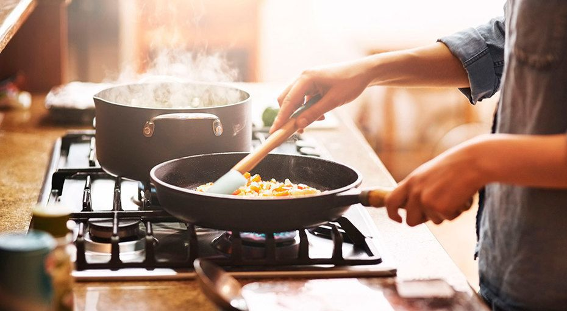
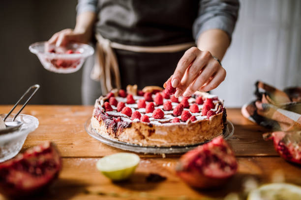

Смачні рецепти
Головна



Ласкаво просимо на наш сайт з рецептами — ваш путівник у світі кулінарного мистецтва! Тут ви знайдете безліч смачних ідей для будь-якої нагоди: від швидких сніданків до святкових вечерь. Легкі покрокові інструкції, корисні поради та натхнення допоможуть вам створювати справжні кулінарні шедеври прямо на власній кухні. Незалежно від того, чи ви новачок, чи досвідчений шеф-кухар, у нас є щось особливе для кожного. Готуйте з радістю і діліться смаком з близькими!